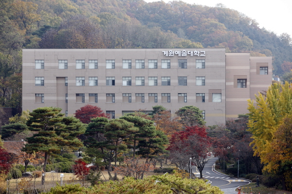

생활 꿀팁 / 생존 가이드

디미디 학생들을 위한 학교 생활 가이드
입학 후 처음 학교 생활을 시작할 때 꼭 알아두면 좋은 팁들을 정리했습니다. 강의실 위치, 장비 사용, 과제 루틴 등 디미디 학생이라면 반드시 알면 좋은 정보만 모아놓았습니다.
꿀팁 ① 공강시간 루틴 만들기
항상 가는 작업실이나 카페를 지정해두면 과제 효율이 엄청 올라간다.
꿀팁 ② 상비템 챙기기
태블릿 펜, USB, 충전기, 이어폰은 가방에서 절대 빼지 말기
꿀팁 ③ 도서관 적극 활용하기
집중이 잘 안 되는 날은 도서관으로! 조용하고 쾌적해서 작업 효율이 확 올라간다.
꿀팁 ④ 아침·밤 루틴 지키기
과제하다 보면 밤낮이 쉽게 바뀌는데, 하루만 뒤집혀도 체력이 크게 떨어진다. 일정한 루틴을 꼭 유지